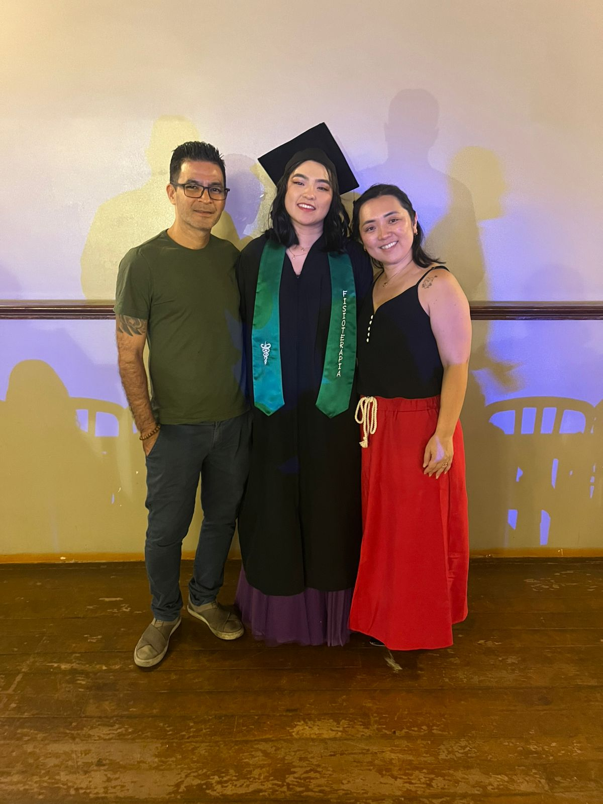
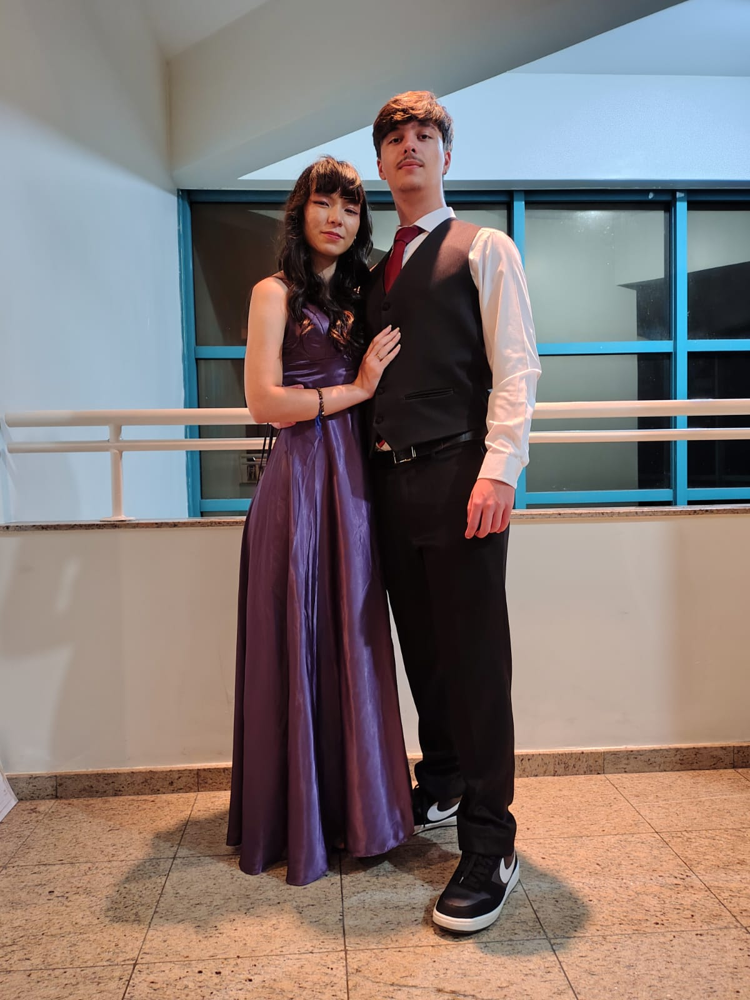

Conduziu as aulas com excelente didática, conectando a teoria à prática de forma clara.
Foi essencial no suporte extraclasse, oferecendo um auxílio paciente e didático nos momentos de maior dificuldade.
Dedicou-se a apoiar durante todo o percurso, transformando tópicos difíceis em explicações simples e que ninguém ficasse para trás.
Referência em sala de aula. Sua clareza e domínio do conteúdo foram fundamentais para evolução.
Seus ensinamentos foram fundamentais para expandir nossa visão crítica e dominar os conceitos mais complexos da disciplina.
Sempre disponível e ágil. Facilitou o aprendizado prático e ajudou a fixar o conteúdo das aulas.
Referência em sala de aula. Sua clareza e domínio do conteúdo foram fundamentais para nossa evolução.
Excelente didática nas aulas. Seus ensinamentos transformaram conceitos complexos em conhecimento prático e acessível.
Apoio fundamental. Teve total paciência e clareza para tirar nossas dúvidas.
Suporte prático essencial no PI, me ajudando a desatar nós técnicos e a avançar com segurança nas entregas.
Trouxe leveza e incentivo constante, nos ensinando a ter resiliência e a trabalhar em equipe nos momentos difíceis.
Destacou-se pela empatia e escuta ativa, sendo um porto seguro que nos ajudou a lidar com a pressão e o estresse.